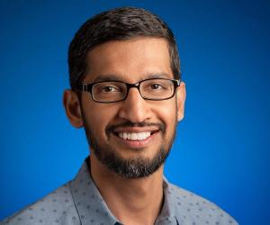
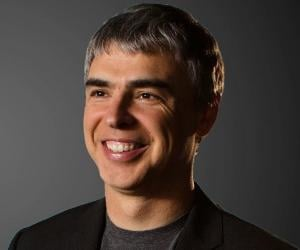
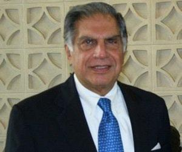
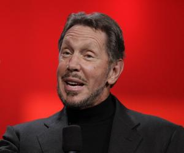
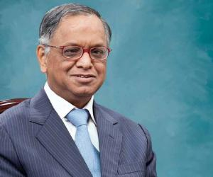
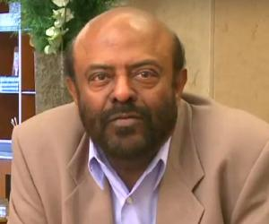

October 16, 2011, was declared Steve Jobs Day by the governor of California, Jerry Brown.
Apple, Microsoft, and Disney properties (including Disneyland and Disney World) flew their flags at half-staff when Jobs died.
The founder/co-founder of Apple Inc, Pixar Animation Studios and NeXT Inc was a passionate visionary who was responsible for the development of iMac, iPod, iTunes, iPad and the iPhone which ushered in a new era in the computer, music and
film industries.
2. Sundar Pichai

Famous As: CEO of Google Inc
Birthdate: July 12, 1972
Sun Sign: Cancer
Nationality: Indian, American
Sundar Pichai is the CEO of Google and its parent company Alphabet Inc.
An alumnus of IIT, Stanford and Wharton, Pichai has come a long way, from innovating Google’s products such as Chrome, Google Drive and Google Apps to leading the software giant and being one of the most sought-after names in the tech
industry.
3. Larry Page

Famous As: Co-founder of Google
Birthdate: March 26, 1973
Sun Sign: Aries
Nationality: American
Larry Page is an American Internet entrepreneur and computer scientist.
As one of the co-founders of the multinational technology company Google, Larry Page effectively changed the way the world functions today as Google is a synonym for a search engine in many parts of the world.
He became a billionaire after co-founding Google.
4. Ratan Tata

Famous As: Chairman Emeritus of Tata Sons
Birthdate: December 28, 1937
Sun Sign: Capricorn
Nationality: Indian
Ratan Tata is a well-known Indian industrialist and the former charman of Indian multinational conglomerate Tata Sons.
His reign as chairman was marked by acquisitions of iconic global brands, such as Tetley, Jaguar Land Rover and Corus by the Tata Group.
Ratan Tata was instrumental in turning Tata Group from a largely India-centrist group into a global business.
5. Bill Gates
Famous As: Co-Founder of Microssoft
Birthdate: October 28, 1955
Sun Sign: Scorpio
Nationality: American
Leading American technologist, business leader and philanthropist.
Bill Gates is the co-founder of the world’s largest software company, Microsoft.
His passion for computers made him one of the richest in the world and through his charity foundation, Bill & Melinda Gates Foundation, he and his ex-wife, Melinda, use this money generously to help people world over live a better
life.
6.Larry Ellison

Famous As: Founder of Oracle
Birthdate: August 17, 1944
Sun Sign: Leo
Nationality: American
Oracle co-founder Larry Ellison was Forbes’s sixth-wealthiest person in the world in 2019.
He has been associated with Apple and Tesla, too.
He once owned the world’s 12th-largest yacht.
He is a certified pilot and also owns a tennis facility.
A devoted philanthropist, he has taken The Giving Pledge.
7 . N. R. Narayana Murthy

Famous As: Founder of Infosys
Birthdate: August 20, 1946
Sun Sign: Leo
Nationality: Indian
N. R. Narayana Murthy is an Indian businessman who is credited with co-founding one of the most popular and successful Indian multinational corporations, Infosys.
Fortune magazine named him as one of the 12 greatest entrepreneurs of our time, Time magazine called him the father of the Indian IT sector.
Murthy serves as an inspiration to aspiring businessmen in India.
8. Jan Koum
Famous As: CEO and co-founder of WhatsApp
Birthdate: February 24, 1976
Sun Sign: Pisces
Nationality: American
Jan Koum is a Ukrainian American computer programmer and entrepreneur.
He is credited with co-founding the popular cross-platform messaging service, WhatsApp.
One of the most popular billionaires around the world, Koum donated almost $556 million to the donor-advised community foundation, Silicon Valley Community Foundation, in 2014.
9.Shiv Nadar

Famous As: Founder of HCL
Birthdate: July 14, 1945
Sun Sign: Cancer
Nationality: Indian
Padma Bhushan-winning Indian billionaire businessman Shiv Nadar is known as the founder and chairman of the IT company HCL and the Shiv Nadar Foundation.
He transformed HCL from an IT hardware company into an IT enterprise, by 2021, he also turned himself into the third-richest Indian
10. Jawed Karim
Famous As: Co-Founder of YouTube
Birthdate: October 28, 1979
Sun Sign: Scorpio
Nationality: German, American
Jawed Karim is an American Internet entrepreneur and software engineer.
Karim is credited with co-founding one of the most popular online video-sharing platforms, YouTube.
He is also credited with uploading the first YouTube video named Me at the zoo.
During his time working at PayPal, Jawed Karim had designed many of the company's core components, such as its anti-Internet-fraud system.